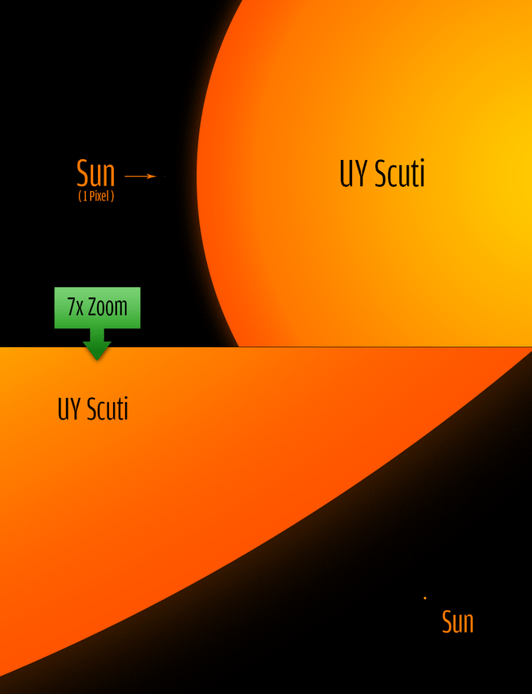

| Mercúrio | Marte | Vênus | Júpiter |
 |
|||
| Saturno | Netuno | Urano | Terra |
| Mercúrio | Marte | Vênus | Júpiter |
|
|||
| Saturno | Netuno | Urano | Terra |
Mercúrio é o planeta mais próximo ao Sol e o oitavo em tamanho no sistema solar. A distância média é de 57,9 milhões de quilômetros do Sol. É basicamente constituído por ferro, sendo chamado por Iron Planet. Pode ser visto da Terra a olho nu, contudo pouco antes do amanhecer e instantes após o anoitecer porque sua proximidade com o Sol dificulta a observação. Devido à sua velocidade, foi batizado com o nome de Mercúrio por ser o deus do comércio, das viagens e da malandragem. É o planeta mais rápido do Sistema Solar, perfazendo 47,87 quilômetros por segundo ao redor do Sol. A superfície é semelhante à da Lua, rochosa e com diversas crateras. O diâmetro de Mercúrio é de 4.800 km. É considerado um Planeta de órbita excêntrica porque a distância em relação ao Sol muda conforme a posição na órbita e isto é responsável pela variação de temperatura do planeta, de 180ºC a 400ºC. Os astrônomos o consideram o menor no Sistema Solar desde que Plutão foi rebaixado à nomenclatura de Planeta Anão. A atmosfera do planeta Mercúrio é constituída de potássio, sódio, hélio, oxigênio molecular, hidrogênio, além de nitrogénio, dióxido de carbono e vapor de água.
Em 1965, os rádio Gordon Pettengil e Rolf Dyce conseguiram medir o período de rotação de Mercúrio, que é de 59 dias. As primeiras observações telescópicas de Mercúrio foram feitas por Galileu Galilei em 1610. Em 1631, o astrônomo francês Pierre Gassendi observou a movimentação de Mercúrio em torno do Sol. A prova, contudo, de que traça uma órbita ao Sol só ocorreu em 1639, pelos estudos do astrônomo italiano Giovanni Zupus.
Marte
Marte é o quarto planeta mais próximo do Sol e o segundo menor planeta do sistema solar, depois de Mercúrio, sendo consideravelmente menor que o planeta Terra. Apresenta uma coloração avermelhada, pela presença de óxido de ferro na sua superfície. Por isso, recebeu o nome de Marte, em homenagem ao deus romano da guerra. Possui duas pequenas luas de formato irregular: Fobos (medo) e Deimos (pânico). Seus nomes derivam da mitologia grega e representam os filhos de Ares (Marte) e Afrodite (Vênus). Marte é um dos planetas mais estudados do sistema solar. Podendo ser visto da Terra a olho nu, ou seja, sem auxílio de um telescópio. Marte é um planeta muito frio, árido e rochoso. A sua temperatura máxima é de aproximadamente 25°C, com uma média de -60°C, a qual pode chegar até cerca de -140°C durante à noite.
Nomeada em homenagem ao engenheiro de foguetões Sergei Korolev, a cratera de Korolev tem 82 quilómetros de diâmetro e encontra-se nas planícies do Norte de Marte, na região polar. “É um exemplo de uma cratera marciana especialmente bem-preservada e que não está preenchida por neve mas por gelo. O seu centro tem água gelada com 1,8 quilómetros de espessura durante todo o ano”, descreve a ESA em comunicado. A cratera tem sempre gelo devido a um fenómeno chamado “armadilha gelada”. Para percebermos como funciona esta armadilha, tem de se ter em conta que o solo da cratera é fundo (fica a cerca de dois quilómetros de profundidade da sua borda) e que aí há gelo, que vai actuar como uma armadilha. Isto é, o ar que está sobre esse depósito de gelo fica mais frio e afunda-se.
Vênus

|
Vênus é o segundo planeta do sistema Solar mais próximo do Sol. Tem cerca de 800 milhões de anos e além do Sol e da Lua é o corpo celeste mais brilhante no céu, motivo pelo qual é conhecido desde a antiguidade. Também chamado de Estrela Dalva, estrela da manhã, estrela da tarde e joia do céu, é considerado um planeta irmão da Terra. Isso decorre em virtude das similaridades de massa, densidade e volume entre ambos. Vênus tem 12.104 km de diâmetro, ou seja, seu raio equivale a 6.052 km. A sua superfície é coberta de lava e composta principalmente de dióxido de carbono e ácido sulfúrico, os quais formam nuvens densas responsáveis pelo fenômeno de efeito estufa. É isso que faz a temperatura aumentar a níveis suficientes para derreter o chumbo. Pelo menos 97% de composição atmosférica é feita por dióxido de carbono. Há também 3% de nitrogênio e traços de dióxido de enxofre, vapor d'água, monóxido de carbono, argônio, hélio, neônio, cloreto de hidrogênio e fluoreto de hidrogênio.
Vênus é o planeta mais próximo da Terra. A rotação de Vênus ocorre de leste para oeste, contrária a todos os planetas do Sistema Solar. O planeta recebeu esse nome em homenagem à Vênus, a deusa romana da beleza e do amor. Vênus pode ser visto da Terra sem o auxílio de equipamentos. É o planeta mais quente, apesar de não ser o mais próximo do Sol, lá ela chega a 482 ºC na superfície devido ao efeito estufa dos componentes do planeta.
Júpiter é o maior planeta do Sistema Solar, o quinto a partir do Sol e o quarto corpo celeste mais brilhante no céu – os demais são o Sol, a Lua e Vênus. A massa é 318 vezes superior à da Terra e maior que todos os planetas do Sistema Solar juntos. Tem cerca de 143 mil quilômetros de diâmetro no equador, o que equivale a 11 vezes mais que o diâmetro da Terra. É orbitado por 67 satélites naturais, situando-se a uma distância média de 778,3 milhões de quilômetros do Sol. A atmosfera de Júpiter é composta por hidrogênio e hélio, tendo, ainda, traços de metano, amônia, vapor d'água e outros componentes a uma temperatura de 103ºC. O planeta, cujo formato é de uma esfera oblata, tem elevada pressão atmosférica e a intensidade provoca a quebra dos átomos hidrogênio, que se transforma em metal.
Foi batizado com esse nome em homenagem ao governante do Olimpo, Júpiter, o deus dos deuses. Júpiter, assim como Saturno, exibe um sistema de anéis, contudo são tênues e menos brilhantes, não observáveis a partir da Terra e que só foram descobertos em 1979 pela sonda Voyager 1. É um dos quatro Gigantes Gasosos, juntamente com Saturno, Urano e Netuno. Gigantes Gasosos são compostos, principalmente pelos gases hidrogênio, hélio e metano e, ainda, um pequeno núcleo sólido no interior.

|
Saturno é o sexto planeta a partir do Sol, e o segundo maior do sistema solar. O primeiro é Júpiter. É conhecido pelo complexo sistema de anéis formados principalmente por gelo e poeira cósmica e possui 53 luas conhecidas e outras nove em pesquisa. O diâmetro de Saturno é de 119,3 mil quilômetros e o seu volume é 755 vezes maior que a Terra. Possui uma das mais rápidas rotações do Sistema Solar de oeste para leste, demorando 10 horas e 39 minutos para dar a volta sobre si mesmo. O movimento de translação – em volta do Sol – é feito em 29 anos, 167 dias e 6 horas terrestres a 34,7 quilômetros por hora. É um planeta gasoso, juntamente com Júpiter, Urano e Netuno e a temperatura na superfície é de 125º C negativos. O planeta Saturno foi descoberto em 1610 pelo astrônomo italiano Galileu Galilei e recebeu o nome do deus romano da agricultura. É o planeta mais distante que pode ser observado da Terra a olho nu.
As observações realizadas em Saturno indicam que os anéis do planeta são formados por pedaços de cometas, asteroides e luas despedaçadas. Os anéis mais conhecidos são denominados A, B e C, mas há sete no total, todos representam letras do alfabeto à medida em que foram descobertos. Cada um tem milhares de quilômetros de extensão, chegando a 282 mil quilômetros, mas são, em geral, de espessura média a 1 quilômetro. A primeira lua de Saturno a ser descoberta foi Titã, por Christiaan Huygens, em 1655. Em seguida, Giovanni Domenico Cassini descobriu Iapetus (1671), Rhea (1672), Dione (1684), e Tétis (1684). As luas Mimas e Enceladus foram descobertas por William Herschel em 1789 e 50 anos mais tarde foram observadas Hyperion (1848) e Phoebe (1898). Com a melhoria no sistema de observação, no século 19 foram descobertas outras luas a orbitar Saturno, totalizando 18. Em decorrência dos trabalhos da missão Cassini já foram identificados 53 satélites.

|
Netuno é o oitavo planeta a partir do Sol. É um gigante gasoso, bem como Júpiter, Saturno e Urano. Está distante 4,5 bilhões de quilômetros do Sol e demora 156 anos terrestres para completar uma órbita. Foi descoberto em 1846 e recebeu o nome do deus romano do mar. A comunidade científica denomina os planetas com nomes da mitologia greco-romana. O planeta demora 16 horas terrestres para completar o movimento de rotação – duração de um dia neptuniano. Possui 13 luas confirmadas e uma ainda aguarda a confirmação por cientistas. O planeta Netuno é composto, principalmente, de água muito quente, amônia e metano em seu núcleo, que tem aproximadamente o tamanho da Terra. A atmosfera é formada por hidrogênio, hélio e metano. Assim como Urano, a cor azulada brilhante de Netuno resulta da elevada quantidade de metano na atmosfera.
Netuno tem seis anéis conhecidos, todos localizados após as observações da sonda Voyager 2. Os anéis são não uniformes, mas têm quatro grossos Regiões (massas de poeira) chamado arcos e seriam jovens, com poucos bilhões de anos. Somente em 1984, astrônomos encontraram evidências da existência do sistema de anéis em torno de Netuno. As 13 luas de Netuno são nomeadas após vários deuses do mar e ninfas na mitologia grega. Uma última foi descoberta em 2013 pelas observações da sonda Voyager 2 e ainda é aguardado o reconhecimento. Esse corpo celeste orbita em um dos anéis de Netuno. A principal lua de Netuno, Tritão, foi descoberta pelo matemático inglês William Lassell, que era um astrônomo amador. A descoberta ocorreu em 10 de outubro de 1846, mas somente em 1989, a sonda Voyager 2 visitou o planeta e descobriu os fracos anéis a orbitar Netuno. As demais luas foram descobertas entre 2002 e 2003 e todas recebem os nomes de deuses e ninfas da mitologia grega.
Urano é o sétimo planeta a partir do Sol, o terceiro maior do Sistema Solar e foi o primeiro a ser encontrado por meio de um telescópio, pelo astrônomo William Herschel em 1781. Demora 84 anos terrestres para completar uma rotação ao sol. Urano é o nome do deus grego do céu. Assim como Vênus, Urano gira de leste a oeste. Observações mais detalhadas do planeta foram realizadas pela sonda Voyager, em 1986 e pelo telescópio Hubble. Juntamente com Netuno, é um dos dois gigantes de gelo do céu. É formado, principalmente, por hidrogénio e hélio, sendo classificado também como planeta gasoso. A velocidade da órbita de Urano é de 27,4 mil quilômetros por hora e a massa é 14,5 vezes maior que a da Terra. A atmosfera de Urano é constituída, principalmente, de hidrogênio, hélio e metano. A temperatura na superfície chega a 216ºC negativos. A cor azulada resulta da absorção de luz vermelha do metano nas camadas superiores da atmosfera.
O planeta Urano exibe 13 anéis. As observações mais evidentes dos anéis de Urano ocorreram em 1977, por equipes do Airborne Observatory Kuiper e do Observatório de Perth, da Austrália. Na ocasião, foram descobertos cinco anéis, denominados Alpha, Beta, Gamma, Delta e Epsilon, considerando a ordem crescente de distância do planeta pelos pesquisadores do Airborne Observatory. Já a equipe de Perth identificou seis mergulhos distintos na luz das estrelas, que eles chamaram anéis de 1 a 6. Após as observações da Voyager 2, em 1986, foram descobertos mais dois anéis. O planeta possui 27 luas conhecidas que são nomeadas com personagens das obras de William Shakespeare ou Alexander Pope. As primeiras quatro luas, Titania, Oberon, Ariel e Umbriel foram descobertas entre 1787-1851. A mais complexa de todas, Miranda, foi descoberta em 1948.
O Planeta Terra é um dos 8 planetas que fazem parte do Sistema Solar. Também chamado de "Planeta Azul",recebe esse denominação posto que grande parte do planeta é formado por água. De partida, vale destacar que os planetas são corpos celestes sólidos e arredondados que não possuem luz própria e nem calor. O planeta Terra é o único planeta do sistema solar em que existe água em estado líquido, característica que junto ao oxigênio, torna possível a vida no planeta. Essa água corresponde cerca de 70% da superfície do planeta, local chamado de hidrosfera. A Terra é composta de diversos gases, de forma que em sua atmosfera encontramos principalmente, o nitrogênio (78%) e oxigênio (21%). Ademais, a Terra é o terceiro planeta a partir do Sol o qual dista cerca de 149 milhões de Km do Sol. Situado na Via Láctea, a Terra formou-se cerca de 4,5 bilhões de anos atrás e possui 12.757 km de diâmetro, sendo considerado o quinto maior planeta em tamanho.
Geologia é o nome atribuído a ciência que estuda a história da Terra, dividida nas chamadas "Eras Geológicas". A Terra é o corpo celeste mais denso do Sistema Solar sendo seu satélite natural a Lua. O núcleo terrestre pode atingir temperaturas de até 5000 °C. O planeta Terra possui uma área total de aproximadamente 510 milhões, sendo 150 milhões de Km2, as terras emersas e 360 milhões de Km2 correspondem a área coberta pelos mares e oceanos. A profundidade média dos oceanos no planeta Terra gira em torno de 3800m. Dia 22 de abril é comemorado o “Dia Mundial do Planeta Terra”.
| Planetas | |
| Inicio | |
| Menu |
Estrelas são bem diferentes de planetas, pois imitem sua luz própria e são muito maiores. Composta de hélio e outros elementos mais "pesados". Esses corpos celestes gigantes compostos de gás hélio (maior parte) produzem reações nucleares, só não as explodem totalmente por causa da gravidade que as mantém vivas (não pra sempre).
 |
 |
||
| 2MASS JO523-1403 | Antares | Betelgeuse | Pistol Star |
 |
 |
||
| Pólux | Arcturus | Sirius A | UY Canis |
2MASS JO523-1403
|
| 
| 
|
2MASS J0523-1403 é uma anã vermelha de massa muito baixa a cerca de 40 anos-luz da Terra, na constelação do sul de Lepus . Com uma magnitude visual muito fraca de 21,05 e uma baixa temperatura efetiva de 2074 K , é visível principalmente em grandes telescópios sensíveis à luz infravermelha . O 2MASS J0523-1403 foi observado pela primeira vez como parte do Two Micron All-Sky Survey ( 2MASS ).
Os cientistas acreditam que a estrela 2MASS JO253-1403, descoberta em 2013, pode ser a menor do universo. Esta estrela, localizada a cerca de 42 anos-luz de distância, poderia caber dentro de Júpiter. Mas isso não significa que medimos todas as estrelas do universo - só que essa estrela é tão pequena quanto se pode obter enquanto ainda é considerada uma estrela.
Antares

|
Antares é uma estrela supergigante de classe M, com um raio de aproximadamente 883 vezes o raio do Sol; se fosse colocada no centro do Sistema Solar, a sua parte mais externa se encontraria entre a órbita de Marte e Júpiter. Antares está a aproximadamente 600 anos-luz da Terra. A sua luminosidade visual é de cerca de 10 000 vezes a do Sol, mas como a estrela irradia uma parte considerável de sua energia na parte infravermelha do espectro, a sua luminosidade bolométrica é de 65 000 vezes a solar. A massa de Antares é de 15 a 18 massas solares. Esse tamanho grande e relativamente pouca massa dão a Antares uma densidade muito pequena.
Antares é a 16.ª estrela mais brilhante do céu noturno (embora às vezes seja considerada a 15.ª, se os dois componentes mais brilhantes da estrela Capella forem contados como uma estrela). Junto com Aldebaran, Spica, e Regulus, Antares é uma das quatro estrelas mais brilhantes próximas da eclíptica. Antares é uma estrela de variabilidade lenta, com uma magnitude aparente de +1,09. A melhor época do ano para ver Antares é em 31 de maio, quando a estrela está em oposição com o Sol. Nesse momento, a estrela é visível a noite inteira. Por duas a três semanas do final de novembro, Antares não é visível totalmente devido ao brilho do Sol. Esse período de invisibilidade é maior no hemisfério norte do que no hemisfério sul, uma vez que a declinação da estrela é ao sul do equador celeste.
Betelgeuse

|
Betelgeuse, é uma estrela de brilho variável sendo a 10ª ou 12ª estrela mais brilhante das que podem ser vistas da Terra. É também a segunda estrela mais brilhante na constelação de Orion. Betelgeuse é uma estrela supergigante vermelha, e uma das maiores estrelas conhecidas, sendo de grande interesse para a astronomia. O diâmetro angular de Betelgeuse foi medido pela primeira vez em 1920-1921 por Michelson e Pease, sendo uma das cinco primeiras a serem medidas usando um interferómetro no telescópio de 100 polegadas do Monte Wilson. O seu diâmetro é de 887±203 vezes o do Sol. No diâmetro máximo, a estrela seria maior que a órbita de Saturno se colocada no lugar do Sol. Apesar de ser apenas 14 vezes mais massiva que o Sol, é cerca de algumas centenas de milhões de vezes maior em volume, como uma bola de futebol comparada a um grande estádio de futebol. A sua proximidade à Terra e o seu enorme tamanho fazem dela a estrela com o terceiro maior diâmetro angular vista da Terra, menor apenas que o Sol e R Doradus. É uma das 12 estrelas cujos discos reais podem ser visualizados com telescópios atuais. Betelgeuse possui uma temperatura à superfície de cerca de 3.500 K.
Os astrônomos já confirmaram: uma das constelações mais famosas do nosso céu noturno - Órion, o caçador - cedo ou tarde perderá seu ombro direito. Isso vai acontecer porque sua segunda estrela mais brilhante, Betelgeuse, está morrendo. Mas ela definitivamente não terá uma morte serena, muito pelo contrário. Como uma boa supergigante vermelha, seu último suspiro promete ter desdobramentos cataclísmicos, resultando naquilo que a ciência considera um dos eventos mais violentos e extremos da natureza - uma supernova.

Pistol Star
Pistol Star, é uma hipergigante azul e uma das estrelas mais massivas conhecidas. Tem esse nome por estar na Nebulosa da Pistola, a qual é iluminada por ela. Calcula-se que atire ao espaço 10 milhões de vezes mais luz que o Sol, sendo-lhe 100 vezes mais massiva. Com idade de 3 milhões de anos, a Pistol Star pode ter pesado 200 vezes a massa do Sol antes de expulsar muito de seu peso em violentas erupções que tiveram início de há 4000 até há 6000 anos. Estas erupções podem ter criado a brilhante, enorme nebulosa em forma de pistola que a envolve. A nebulosa é tão grande (4 anos-luz), que quase preencheria a distância entre o Sol e Proxima Centauri, a mais próxima estrela do nosso sistema solar.
Os astrônomos estimam que a estrela produz em seis segundos tanta energia quanto o Sol produz em um ano. Queimando nesta taxa dramática, a Estrela da Pistola está destinada a ter vida curta e morte abrupta. Cientistas crêem que a estrela poderá morrer a qualquer momento numa espetacular supernova nos próximos três milhões de anos. Para comparação, o Sol ainda está em sua meia-vida de 10000 milhões de anos. Com tamanho suficiente para preencher a órbita da Terra, a Pistol Star encontra-se a 25000 anos-luz de distância, bem perto do centro da Via Láctea, na direção da constelação de Sagitário.
Pólux
Pólux ou Pollux é a estrela mais brilhante da constelação de Gemini e a 17ª mais brilhante de todo o céu, com uma magnitude aparente de 1,14. Junto com Castor, é um dos gêmeos representados no contorno da constelação. Com base em sua paralaxe, está a aproximadamente 33,78 anos-luz da Terra. Em 2006, foi confirmada a existência de planeta extrassolar orbitando-a. Pólux é a estrela mais brilhante com um planeta conhecido. Pólux é maior que o Sol, com cerca de duas vezes sua massa e quase nove vezes seu raio. No passado uma estrela de classe A da sequência principal, Pólux já consumiu todo o hidrogênio de seu núcleo e evoluiu tornando-se uma estrela gigante com uma classificação estelar de K0 III. Irradia 43 vezes mais luminosidade que o Sol de sua atmosfera externa a uma temperatura efetiva de 4 666 K, o que dá a ela o brilho alaranjado típico de estrelas de classe K. Desde 1943, seu espectro tem servido como base pela qual outras estrelas são classificadas. Pólux parece estar rotacionando lentamente, com uma velocidade de rotação projetada de 1,7 km/s, completando uma rotação em menos de 260 dias.
Pólux possui um baixo nível de atividade magnética, conforme demonstrado pela detecção de baixa emissão de raios-X pelo telescópio ROSAT. A emissão de raios-X da estrela é de cerca de 1027 erg/s, o que é aproximadamente igual à emissão de raios-X do Sol. Um campo magnético com uma força menor que 1 Gauss foi confirmado na superfície de Pólux; um dos campos mais fracos já detectados em uma estrela. A presença desse campo sugere que Pólux já foi uma estrela Ap com uma campo magnético muito mais forte.
Arcturus
A estrela Arcturus é a primeira estrela da constelação de Boötes (formada por 14 estrelas ao todo). Pertence a classe K dos sistema de classificação estelar proposto por Anne Jump Cannon. O tamanho de Arcturus é aproximadamente 30 vezes maior que o do Sol, e sua temperatura chega aos 5.000.000 K. É considerada como uma das estrelas que mais tende a durar (cerca de 9.3 bilhões de anos a mais) devida a sua magnitude média. Antigamente estava classificada como uma Gigante Vermelha, mas na reclassificação proposta pela NASA é considerada atualmente como uma média alaranjada. Está cerca de 33 anos-luz do sistema solar e é uma das estrelas mais brilhantes ao céu terrestre.
Arcturus é a estrela mais brilhante no hemisfério Norte. Embora emita 180 vezes mais energia do que o Sol, ela parece somente 110 vezes mais brilhante, pois grande parte da luz que emana é infravermelha e invisível ao olho humano.
Sirius A

| 
| 
|
Sirius A têm um raio de 1,2 milhões de km, 71% maior que o raio do nosso Sol. Sirius B, por outro lado, têm um raio de apenas 5,900 km, o que a torna um pouco menor que o nosso próprio planeta Terra. A estrela “A” têm uma massa de 2 vezes maior que a do Sol, e embora a “B” seja menor que a Terra, a massa dela é semelhante também a do Sol. A força da gravidade em Sirius B consegue ser 350.000 vezes mais forte que a da Terra, ou seja, caso fosse possível ir na superfície da estrela, você seria esmagado. Isso é facilmente explicável pela densidade dela, que apesar do tamanho, sua massa é altamente compactada. A luminosidade de uma astro e dada através de sua magnitude. Para quem está observando da Terra, Sirius possui uma magnitude de -1,42. Pouquíssimas estrelas no céu noturno possuem uma magnitude negativa, afinal, quanto menor esse número mais brilhante tende a ser um objeto celeste. E esse é um dos motivos para não vermos Sirius B daqui: primeiro, a distância nos faz ver como um astro só e segundo, o brilho fraco dela não ajuda nem um pouco.
Para quem mora no Hemisfério Sul, a estrela Sirius é lindamente visível no céu nesta época de verão. A estrela além de ser a mais brilhante do céu noturno, consegue se destacar com seu brilho azulado e luminosidade sem igual. A estrelinha está localizada a 8 anos-luz da Terra, ou seja, sempre que olhamos para ela temos um atraso de 8 anos na visualização de sua luz. Sirius não é uma estrela apenas: são duas. O sistema é composto por Sirius A e sua companheira Sirius B do tipo anã-branca, que gira em torno de Sirius A a cada 50 anos, mas possui um brilho cerca de 10.000 vezes fraco. A estrela principal “A” é ainda responsável pelo brilho intenso que vemos da Terra. Sirius A e B estão abraçadas a uma distância de 20 UA (1 Unidade Astronômica é equivalente a distância Terra-Sol de 150 milhões de quilômetros). Se elas estivessem no lugar do Sol, os dias na Terra passariam a ser 23 vezes mais brilhantes do que o normal. E para a vida continuar a existir aqui, precisaríamos estar de duas a cinco vezes mais longe de Sírius do que estamos do nosso Sol.
UY Scuti
|  |
UY Scuti está classificada como uma estrela do tipo M4 e apesar de seu tamanho todo, ela é uma super gigante vermelha e não uma hiper gigante vermelha como algumas pessoas pensam. Sua massa ainda não pôde ser definida, primeiramente por que ela não tem uma estrela companheira para ocorrer interferência gravitacional. Modelos de evolução estelar estimam que uma estrela como UY Scuti iniciou sua vida em sequência principal com cerca de 25 massas solares. Provavelmente ela já perdeu cerca de 40% de sua massa inicial. Se a Terra tivesse 20 cm (uma bola de Vôlei), Júpiter teria 2.1 metros, o Sol teria 22 metros, enquanto que UY Scuti 38.000 metros. Ou seja, quase 5 vezes o tamanho do Monte Everest.
Em 1860, um astrônomo alemão descobriu UY Scuti e ela foi inicialmente chamada de BD-12 055. Desde então, observações tem sido feitas para tentar entender essa estrela diferenciada pelo tamanho. Afinal, ela é a maior já descoberta. Seus números são tão expressivos que chega a ser desafiador tentar compreendê-la. Ela é a estrela de maior diâmetro e uma das mais luminosas conhecida pelo Homem até então. UY Scuti, localiza-se na Constelação da Cauda a 9.500 anos-luz daqui. Apenas em condições excepcionalmente ótimas de observação é que pode-se vê-la com um telescópio pequeno ou com um binóculo potente.
| Estrelas |
| Inicio |
| Menu |
Galáxias são sistemas gigantescos compostos por bilhões de estrelas. A nossa galáxia (Via-láctea) tem um diâmetro de 100.000 Anos Luz. A descoberta de novas galáxias foi feita graças a pesquisas realizadas por Edwin Hubble utilizando um telescópio de 2,5 metros.
 |
As galáxias espiral-barradas distinguem-se das restantes pelo facto de possuírem uma estrutura em barra que contempla muitas das estrelas que se encontram na proximidade do centro da galáxia. Nestas galáxias, os braços parecem girar,
não em torno do núcleo, mas associadas ao movimento de rotação da barra de estrelas, gás e poeiras. A razão da existência da barra que caracteriza este tipo de galáxias não é clara. Acredita-se, no entanto, que a barra seja a resposta do sistema a uma interacção gravitacional periódica, eventualmente devido à existência de uma galáxia companheira. Não obstante, há quem também pense que o
aparecimento da barra é meramente consequência da distribuição da massa no disco destas galáxias.
Cerca de um terço das galáxias são elípticas na sua forma. As galáxias elípticas têm dimensões variadas que vão desde galáxias anãs, muitas vezes difíceis de distinguir de enxames globulares, até galáxias gigantes como é o caso de M70, uma galáxia elíptica gigante na
constelação da Virgem. As maiores destas galáxias elípticas podem ter 1013 massas solares e ter cerca de 105 anos-luz de diâmetro, mas estas galáxias gigantes são raras. As mais comuns são as galáxias elípticas anãs que contêm poucos milhões de massas solares e têm apenas cerca de 6000 anos-luz de diâmetro. Por exemplo, a galáxia espiral nossa vizinha, a Galáxia de Andrómeda (M31), tem duas companheiras
que são galáxias elípticas anãs. O achatamento que se pode observar nestas galáxias não é devido à rotação das mesmas, mas sim devido aos movimentos orbitais das estrelas no interior da galáxia. Sendo um aspecto dinâmico, é de esperar que o achamento vá variando numa escala temporal cósmica. As galáxias elípticas caracterizam-se também pela quase inexistência de estrelas jovens, gás e poeiras, pelo que
deverão ser as estruturas galácticas mais antigas onde formação estelar já está praticamente concluída. As estrelas normalmente são de populações do tipo II, isto é, estrelas velhas com baixa metalicidade. Isto explica que a cor azulada com perfusões de vermelho características das regiões com estrelas jovens e formação estelar seja quase inexistente, sendo estas galáxias sempre amareladas.
Uma galáxia peculiar é uma galáxia com forma, tamanho ou composição que não é encontrada em outras. Eles surgem como resultado de interações entre galáxias e podem conter quantidades atípicas de poeira ou gás, ter um brilho superficial maior ou menor que as galáxias típicas, ou características como jatos nucleares. Eles podem ter uma forma altamente irregular
devido às imensas forças gravitacionais que atuam durante os encontros com outras galáxias.
As galáxias irregulares são aquelas que não coincidem com o esquema de Hubble de galáxias elípticas, espirais e lenticulares.
Existe apenas uma galáxia irregular no catálogo de Messier: M82, e esta é uma galáxia com um disco distorcido. A distorção é devida à interacção gravitacional com a sua maior e mais massiva galáxia vizinha M81. Outro exemplo muito semelhante é pelo menos
mencionado no catálogo de Messier, mas não chega a receber o seu próprio número: NGC 5195, a companheira da galáxia do Cata-vento (M51), descoberta por Pierre Méchain. As únicas galáxias irregulares conhecidas até 1782 eram a Grande e a Pequena Nuvens de
Magalhães; estas são provavelmente discos galácticos em miniatura numa atracção gravitacional mútua, em conjunto com a Via Láctea.
Uma galáxia lenticular é uma galáxia com a forma de uma lente. Este enorme agrupamento de estrelas mais velhas tem uma distribuição regular,
suave e muito pouca estrutura interna. Na verdade, elas podem resumidamente serem descritas como "galáxias espirais sem a estrutura espiral". Uma de suas principais características é serem galáxias com um disco suave, onde a formação estelar parou há muito tempo atrás, quando a
matéria interestelar esgotou-se.Por consegüinte, elas consistem somente, ou pelo menos principalmente, de estrelas de população II velhas. Pela sua aparência e conteúdo estelar freqüentemente elas podem, com dificuldade, ser distingüidas observacionalmente das galáxias elípticas. A classificação desssas galáxias é SO.
As galáxias espirais, quando vistas do topo, apresentam uma clara estrutura espiral. Estas galáxias fazem parte de uma categoria chamada galáxias de disco que também inclui as galáxias espiral-barradas.
As galáxias de disco (chamadas "cosmic frisbies" -- discos de praia cósmicos -- por P. Murdin, D. Allen e D. Malin) são constituídas por um disco gigantesco de estrelas e material interestelar, que pode formar padrões interessantes em espiral. Normalmente estas galáxias têm as proporções aproximadas de um CD com um bojo central
ligeiramente mais espesso. Em algumas galáxias de disco estas proporções não são claramente respeitadas, como é o caso da galáxia do Sombrero (M104), que tem um bojo que quase parece uma galáxia elíptica ou, que noutros casos, parecem não possuir bojo central.
| Inicio |
| Menu |
Á muito tempo atrás certo alguém (Nicolau Copérnico) entrou em conflito com a igreja dizendo que o Sol era o centro do universo. Após isso diversos cientistas, físicos e outros surgiram com suas determinadas idéias sobre a origem e composição do universo. Mesmo que não faça sentido o Sol ser o centro do universo, a idéia de Nicolau ajudou a descobrir que na verdade o Sol era o centro do nosso Sistemas Solar.
O Telescópio Espacial Hubble é o mais importante de todos os telescópios que já foram construídos no mundo. Isso porque ele fica no espaço, livre das interferências da atmosfera terrestre, o que permite que ele consiga imagens precisas de lugares distantes do universo.Projetado e construído nas décadas de 70 e 80, o Telescópio Hubble leva o nome do astrônomo americano Edwin Powell Hubble que foi o primeiro a conseguir provar que as até então chamadas nebulosas eram na verdade (em sua maioria), galáxias independentes, assim como a nossa Via Láctea. Foi ele, também, o primeiro a notar que as galáxias estão se afastando, dando subsídios para a teoria do Big-Bang.
| Inicio |
| Menu |